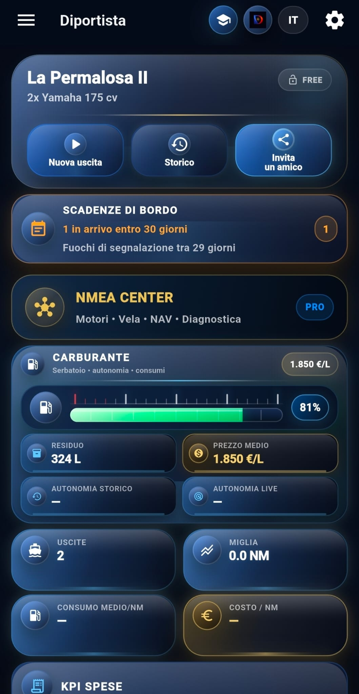
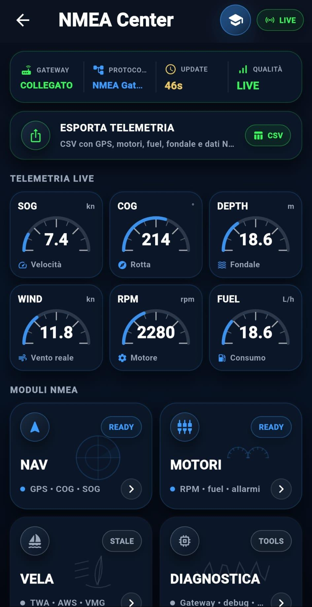
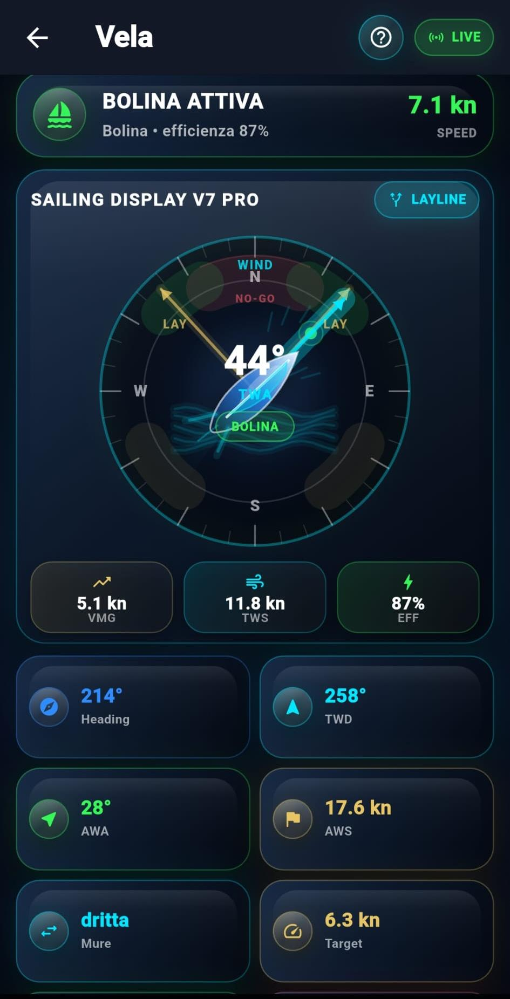
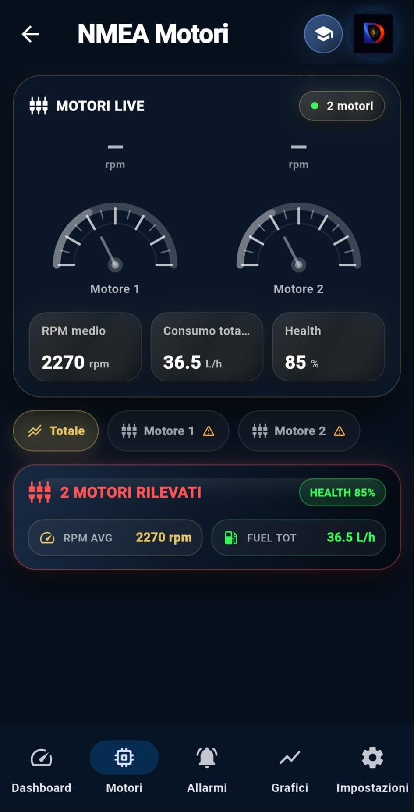
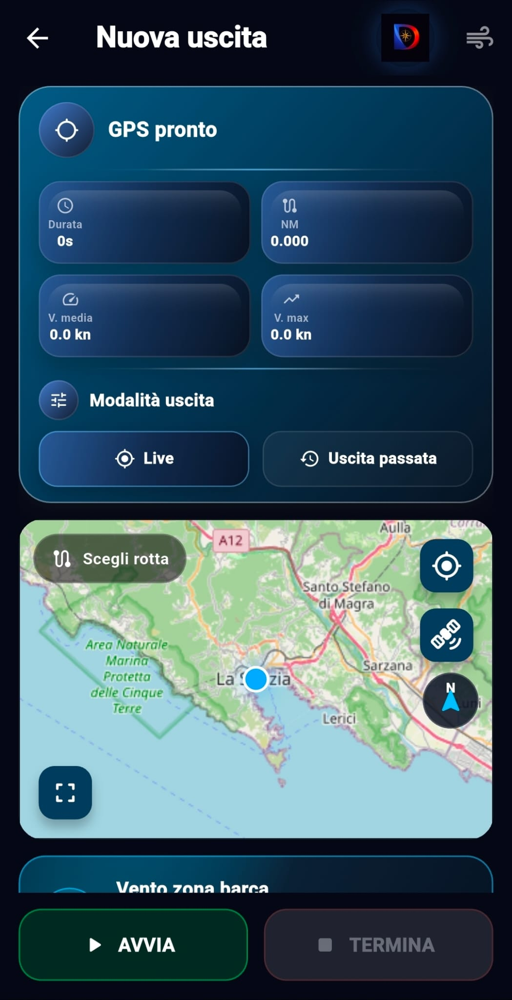
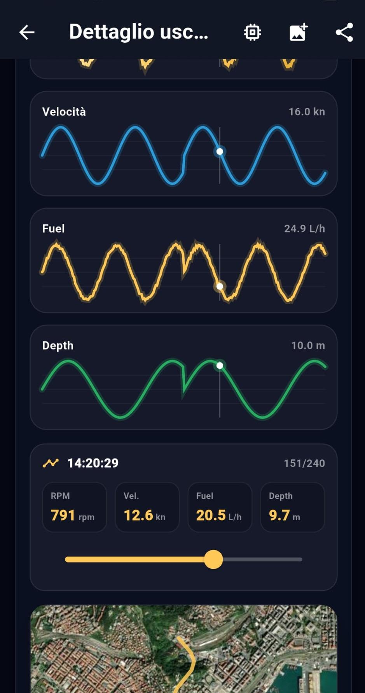
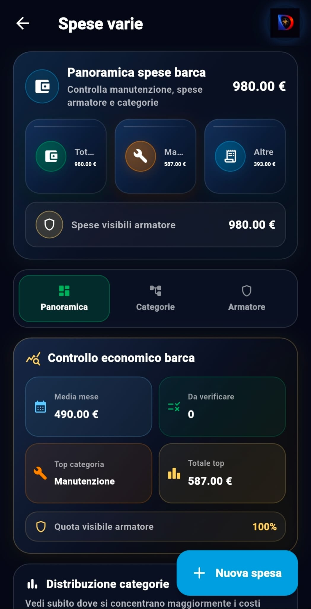
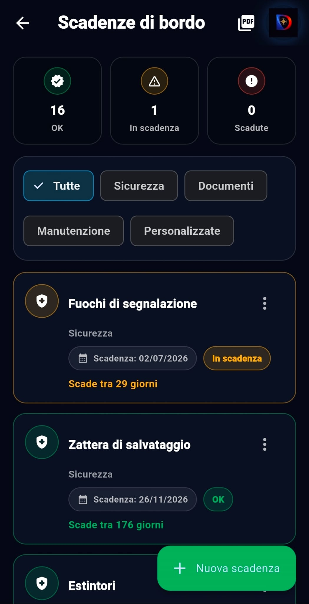
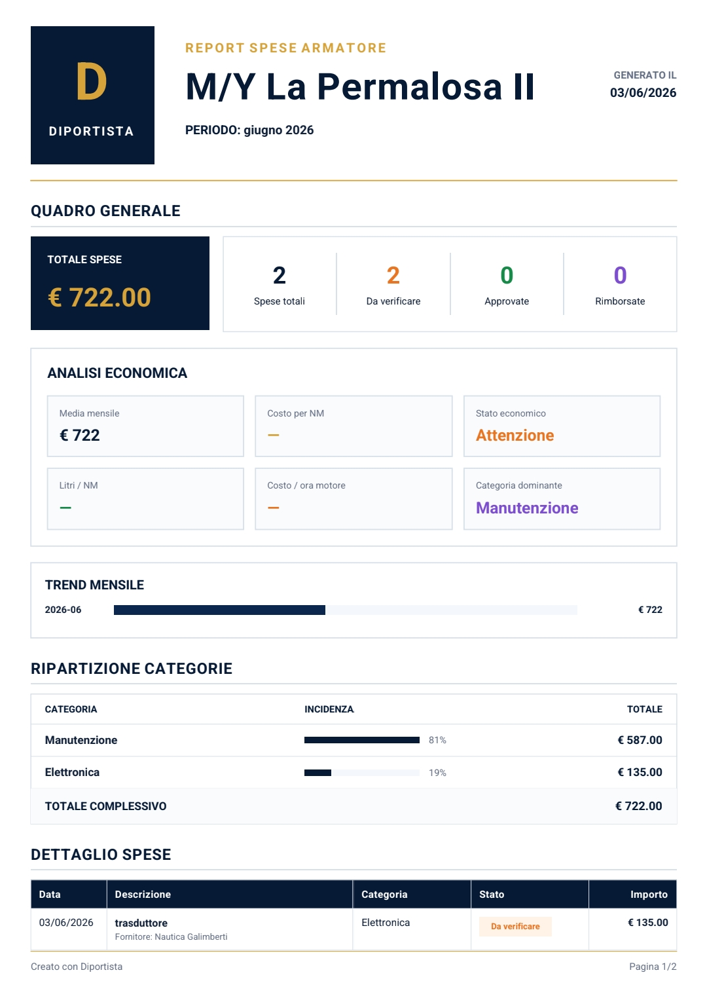

🧭
Diário e GPS
Registre saídas ao vivo ou passadas, milhas, velocidade, rota, notas, fotos e dados da navegação.
Diportista leva para bordo uma experiência moderna: diário de bordo digital, tracking GPS, telemetria NMEA, motores ao vivo, Vela PRO, replay cinematográfico, vencimentos, despesas e relatórios profissionais.



Diportista une navegação, telemetria e controle econômico em uma plataforma para lanchas, infláveis, cruzeiros, yachts e veleiros.
Registre saídas ao vivo ou passadas, milhas, velocidade, rota, notas, fotos e dados da navegação.
Dashboard de motores com RPM, consumo total, health, alarmes e suporte multi-motor com dados NMEA.
Centro técnico para gateway, qualidade do sinal, telemetria live, export CSV e diagnóstico de bordo.
Área dedicada à vela com vento, bolina, eficiência, VMG, TWA, TWS, AWS e laylines.
Reviva a saída com timeline, velocidade, fuel, profundidade, RPM e mapa.
Controle documentos, segurança, manutenção, balsa, sinalizadores, extintores e lembretes.
Categorias profissionais, despesas visíveis ao proprietário, manutenção, eletrônica e controle econômico.
Relatórios para proprietário com visão geral, análise econômica, tendências, categorias e detalhes.
Conecte seu gateway NMEA e leve para o app dados reais de navegação, motores, vento, profundidade e consumo.

RPM, fuel flow, engine health, alarms and multi-engine data give Diportista a real smart-boat feeling.
Diportista também fala com velejadores: vento, bolina, VMG, ângulos, laylines e dados NMEA para navegar melhor.

Start a trip, choose a route, follow the map and keep navigation data under control with a premium interface.
Visual premium, escuro, técnico e legível, feito para uso real a bordo.
Dashboard con barca, carburante, NMEA Center, scadenze e KPI principali.
Telemetrie live, qualità segnale, export CSV e moduli NAV/Motori/Vela.
RPM, fuel totale, health e gestione multi-motore.
Display vela con vento, layline, VMG, efficienza e dati reali.
GPS pronto, mappa, rotta, vento e avvio navigazione live.

Timeline telemetrica con velocità, fuel, depth, RPM e mappa.

Controllo economico, categorie, manutenzione e spese armatore.

Documenti, sicurezza, manutenzioni e promemoria importanti.

Report professionali pronti da condividere.
Diportista integra tracking, NMEA, relatórios, gráficos, PDF e gestão do barco.
De lanchas à vela, o app cresce com módulos dedicados.
Custos, vencimentos, documentos e relatórios organizam a temporada.
Interface náutica dark, KPI claros e telas bonitas e legíveis.
Leve a bordo uma gestão mais moderna, técnica e profissional do seu barco.